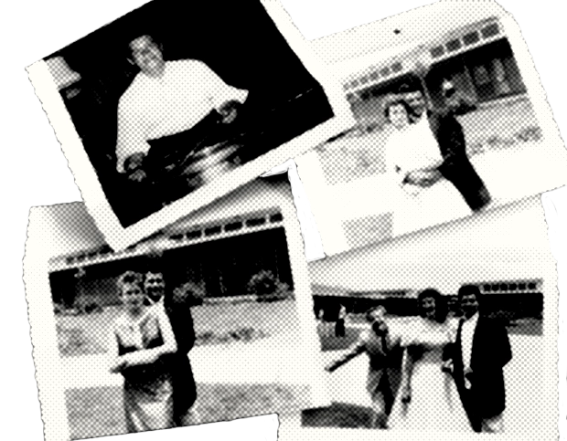

Valens was born as Richard Steven Valenzuela on May 13, 1941, in Pacoima, a neighborhood in the San Fernando Valley region of Los Angeles. The son of Joseph Steven Valenzuela (1896–1952) and Concepción "Concha" Reyes (1915–1987), he had two half-brothers, Robert "Bob" Morales (1937–2018) and Mario Ramirez, and two younger sisters, Connie and Irma.[citation needed] His parents were from the town of Vícam, Sonora, and were both of Yaqui indigenous ancestry, having immigrated to the United States in search of a better life. Although Valenzuela is not a Yaqui surname, many indigenous families adopted it during the Porfiriato dictatorship to avoid forcible removal from their lands, similar to the case of Fernando Valenzuela, who was of Mayo ancestry.
Valenzuela was brought up hearing traditional Mexican mariachi music, as well as flamenco guitar, R&B, and jump blues. He expressed an interest in making music of his own by the age of five. Valenzuela was encouraged by his father to take up guitar and trumpet, and later taught himself the drums. Though Valenzuela was left-handed, he was so eager to learn the guitar that he mastered the traditional right-handed version of the instrument.

Valenzuela was a 15-year-old student at Pacoima Junior High School at the time of the 1957 Pacoima mid-air collision. He was not at school that day since he was attending his grandfather's funeral. Recurring nightmares of the disaster led to Valens's fear of flying.
By the time Valenzuela was attending Pacoima Junior High School (now Pacoima Middle School), he would bring his guitar to school and sing and play songs to his friends on the bleachers. When Valenzuela was 16 years old, he was invited to join a local band, The Silhouettes (not to be confused with the group of the same name famous for its hit song "Get a Job"). Valenzuela began as a guitarist, and when the main vocalist left the group, he took over the position. On June 19, 1957, Valenzuela made his performing debut with The Silhouettes.